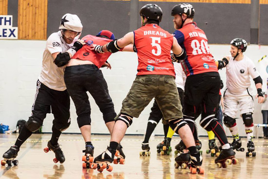
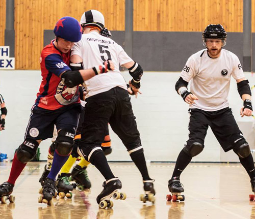
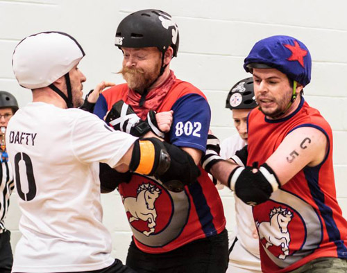
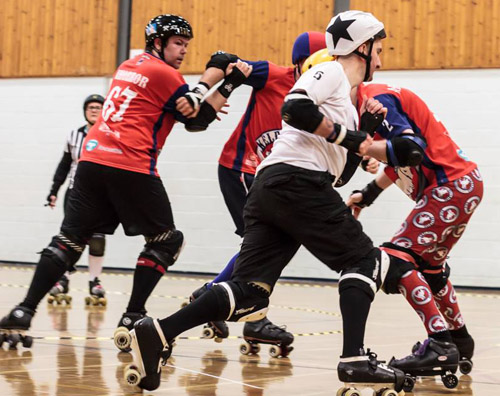
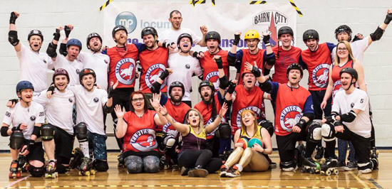

Interview with BCR and CCRD Captains after their first clash
Recently Bairn City Rollers, Skelpies welcomed Capital Citys Mighty Unicorns in what was their first game against each other and the first game in the newly created Scottish Men's Roller Derby Nationals (SMRDNs). We caught up with both team captains to find out their thoughts on their first encounter and the first game of the SMRDNs.
Dreads #5 Skelpies Captain (D) Despicable V #5 Mighty Unicorns Captain (V)
You Both recently made captains of your respective teams, How did it feel to make Captain and lead your team in the first ever SMRDNs game?
D: I was our vice captain for the past two years so I suppose that kind of helped with the preparation. With this being the first ever Nationals there was obviously a bit of pressure but I’m glad that I did it. I’m pleased with our win but this game shows we’ve still got plenty to work on.
V: I had only been captain for about three weeks before our game and have to admit it was a bit of a shock being voted in as I was up against some tough competition within CCRD for it. It was a bit daunting as this was only our second game and Tequila had done such a great job as captain at our last, so I had big boots to fill. It was all a bit like a baptism of fire as everything passed so quickly from being made captain till after the game. We knew it was always going to be a tough game as the Skelpies are a tough team, congratulations to them on the win they really made us work for every point.
 Picture courtesy of Laura MacDonald
Both teams contained skaters who played with Power of Scotland at the world cup last year, including yourselves. Was it strange to skate against people who you used to look to as teammates?
D: To be honest I’m just impressed that I didn’t try to wall up with the wrong skaters or take a whip from one of them! In a way the game was similar to the PoS Team Blue vs Team White game last year in that I was both playing against and alongside my PoS teammates.
V: Like Dreads said it was a bit like the PoS vs PoS game last year. It was odd having some skaters on the opposition who I've played with in PoS and the jakeys and I did find myself a couple of times having to think twice when I saw one of the skelpies i had skated with previously.
This was the first time that both teams have played each other and was only CCRD’s second game. How do you feel CCRD played for their second game?
D: Having watched the footage I don’t think an outsider would have known that this was only CCRD’s second game. Both teams have very similar playing styles (Venus and Ginge have a lot to do with that!) which meant that The Mighty Unicorns were a really tough opponent and those walls were far stronger than any team only on their second game should have!
V: I'm really proud of our performance as all of our skaters really dug down deep throughout the game played their socks off. Since the game I've had a lot of people tell me just how impressed they were by us and how if they didn't know, they would have never have guessed it was only our second game. The Bairns really pushed us hard and took a lead in the first half but no one got disheartened or lost their focus, which is why i think we managed to dig in and pull ourselves back into the game in the second half.
 Picture courtesy of Laura MacDonald
Both teams had a mixture of newer and experienced skaters, how do you think your newer skaters played?
D: Our newer guys ended up getting a lot more track time than any of us, including them, expected so really that speaks for itself! Everyone held their own that day but the other side of it is that I now expect this from them every time they’re on skates now!
V: I have to say how impressed I am with all our newer skaters. They really played their socks off and have progressed so much. Some have been training longer with CCRD than others, but all are doing and did so amazingly well and showed everyone how far they have come along. All of our skaters were on track roughly the same amount give or take a couple of jams which shows how much confidence we have in them.
The only other Scottish vs Scottish mens game so far was BCR vs Mean City last year and BCR took the win. Dread's how does it feel being the undefeated champion against men’s scottish teams?
D: We’ve still got the Mean City rematch to come so I won’t say too much just now just in case but so far I’m loving it but now we’ve got the added pressure to make sure we keep this up.
 Picture courtesy of Laura MacDonald
Dreads, seeing as you won your last encounter with Mean City by over 100 pts and they are your next and last opponent in the SMRDNs, are you quietly confident that you can win the game and the SMRDNs for this year?
D: It’s a difficult one, we’ve scrimmed MCRD a couple of times since we last played them and each time they’ve played a very different game so they’re quite unpredictable. Much like CCRD, both teams have a few skaters who have played together with PoS and/or The Jakey Bites so this should be another really good game to play in and hopefully for the fans too.
 Picture courtesy of Laura MacDonald
What can people expect from your teams at their next SMRDNs game?
D: Hopefully some new faces, new tactics and a win, maybe another cheesy hashtag. We’ve got a couple of games before we face Mean City so they’ll also be a chance to see what to expect in June.
V: We have about another 6 ish months till we take on Mean City in the last SMRDNs game this year, so hopefully we will have some new faces in our ranks as we have a few fresh meat coming through who should be mins passed by then. We also have a few games planned between now and then so our newer guys will get some more game experience under their belt. On top of that, we have been watching the game footage and taking notes for things that we need to work on.
When will be the next time your teams will be in action?
D: The Skelpies will be back in action again at home in April when we take on the Knights of Oldham.
As for BCR vs CCRD, to the best of my knowledge there’s nothing planned yet for another game. But now that this game is out the way we can train together and scrim fairly regularly for the benefit of both teams (possibly featuring some of our Granite City Brawlermen pals?)
V: We were working on an away game in April, which unfortunately now isnt happening so Capital City's next game should be our next home game on the 16th of May.
 Picture courtesy of Laura MacDonald

{kind=link}
{kind=link}
{kind=link}
{kind=link}
{kind=link}